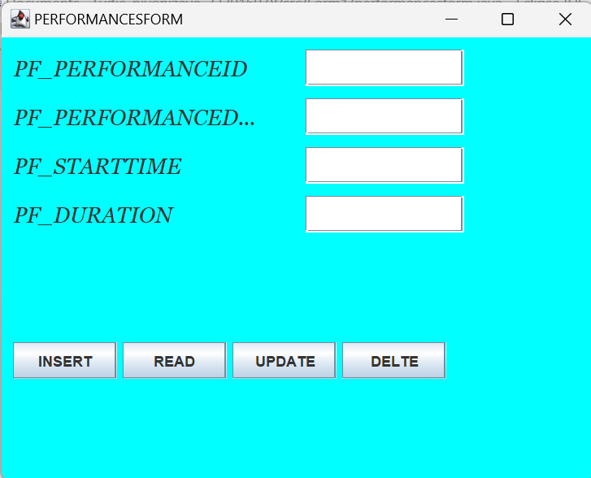

- DATABASE
Database name used: organizing_music_festival.
- Tables
- Admin Table
- LOGIN Table
- REGISTRATION Table
- artists Table
- performances Table
- attendees Table
- festivals Table
- tickets Table
- stages Table
- Attributes
- JAVA
- Description
- Forms and Images
Admin table database structure This is table is table that will be only created by admin and will hold other system users apart from admin will give them email and password that they will use to login and access the project or system, and also t used to register if she/he’s don’t have an account so once you must to create account in order to login and access or use the system. Note: the created Admin will not have same ability and right in the system.
This the first page of the system where system will choose destination depending on the function he/she possess in the system.
As when adimn and user not have account are first to create an account in the registration form. include id,name ,address,etc
As when artists are come to accessing our system are go to access this artist form. This the page on which new created artist will use given username and password that are recorded in database called in table called users to login so that he/she can access the system features he/she is allowed to. Every artist must have access on system depending his/her type, thus this means that if you are HRM you have to have access referring to employee recruitment and hiring not procurement. artist type from artist table is the key element to give artist on system access.
It is forms are helps organizer to get information about performances thaty are done in all festival including performance id, start time,duration.
It is helps user to attendees when he/she need to attend festival. Includes id, first name, last name,email.
Providing administrators and artist with the tools they need to effectively organize and access festival data and festival form would be to facilitate the management of information related to festival.
The ticket form primarily serves to manage information related to the ticket in which tickets are available. And providing attendee with the tools they need to effectively organize and access ticket data.
The stage form facilitates the management of information related to the stage. And providing artists and performances with the tools they need to effectively organize and access stage.
Attributes of Admin Table
Here are the descriptions or purposes of the attributes/columns used in Admin table:
username: The column which represents username of given user.
Password: The column which represents password of the user.
Attributes of login Table Here are the descriptions or purposes of the attributes/columns used in login table:username: The column which are representing username of given user.
Password: The column which are representing password of the user.
Attributes of registration Table Here are the descriptions or purposes of the attributes/columns used in registration table:fname, lname: The columns which are represents first name and last name of user.
phone: The column which represents telephone number of user.
gender: The column which are representing or store gender of user like female and male.
address The column which represents address of user
DoB: The column which represents Date of Birth of user.
username The column which represents Email of given user.
Password: The column which represents password of the user.
Attributes of attendees Table Here are the descriptions or purposes of the attributes/columns used in attendees table:fname, lname: The columns which are representing first name and last name of user.
email The column which represents email of attendees.
phone The column which represents phone of attendees
Attributes of stages Table Here are the descriptions or purposes of the attributes/columns used in stages table:name The columns which represents name of stage.
capacity The column which represents capacity of stage.
Attributes of tickets Table Here are the descriptions or purposes of the attributes/columns used in tickets table:id The columns which represents id of tickets.
purchasedate The column which represents purchasedate of tickets.
price The column which represents price of tickets
Attributes of performances Table Here are the descriptions or purposes of the attributes/columns used in performance table:starttime: The columns which represents starttime of performance.
duration The column which represents duration of performance .
Attributes of festivals Table Here are the descriptions or purposes of the attributes/columns used in festival table:name: The columns which represents name of festival.
location The column which represents location of festival.
Attributes of ARTISTS Table Here are the descriptions or purposes of the attributes/columns used in artists table:name: The columns which represents name of artist.
genre The column which represents genre of artist.
website The column which represents website of artists
IntroductionIn this chapter I will be describing how powerful generalpurpose programming language was used to create the analyzed system. Under this chapter I will undergo full detail of how everything will function together with database that have been describe above and how it copy with full analyzed system.
Tools used to develop this system in java programming
Eclipse IDE: an integrated development environment used in computer programming. It contains a base workspace and an extensible plug-in system for customizing the environment. It is the second-most-popular IDE for Java development, and, until 2016, was the most popular.
JAR stands for Java Archive. It's a file format based on the popular ZIP file format and is used for aggregating many files into one. Although JAR can be used as a general archiving tool, the primary motivation for its development was so that Java applets and their requisite components.
FESTIVAL Form
STAGE Form

PERFORMANCE Form 
ATTENDEE Form
TICKET Form
<